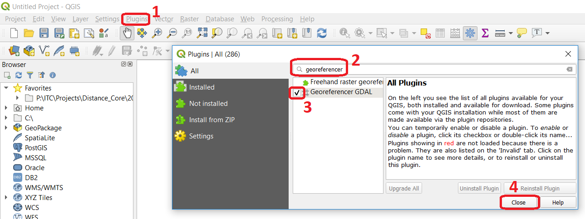

Spatial reference systems¶
Reference Surfaces¶
We use a Reference surface (i.e. datum system) to approximate the shape of the Earth. A horizontal datum (also called geodetic datum) is a model used to measure positions on the Earth. A Vertical datum is a model used to measure elevations, which is related to the Geoid. The elevations are usually related to a mean sea level, and the horizontal position is measured by using an Ellipsoid as reference.
Attention
Question. In the Netherlands, the elevation is measured using as a reference the water level in the canals of Amsterdam. This vertical datum is called Normal Amsterdams Peil (NAP). A large part of the Netherlands would flood if we would not have any dunes or dikes, see Fig. 5. In fact, all land below 0 meters NAP would be the sea. Different countries measure height by referencing to different mean sea levels. Why do we not use one measure for all countries?
Fig. 5 Left: The Netherlands compared to sea level, according to Jan Arkesteijn. Right: The current coastline of the Netherlands.¶
{kind=link}
Attention
Question.
Why we use different reference surfaces for horizontal and vertical positioning?
Define in your own words the difference between a local and global horizontal datum?
What is the horizontal datum for your country?
How are the horizontal and vertical datums connected?
Coordinate Systems¶
In mapping, a Coordinate system is used to uniquely determine the position of a place with respect to the Earth’s surface.
Task Define in your own words the difference between coordinate systems and planar coordinate systems.
The most widely used global coordinate system is the Geographic coordinate system. It consists of lines of geographic latitude and longitude. Lines of equal latitude are called parallels. They form circles on the surface of the ellipsoid. Lines of equal longitude are called meridians and form ellipses (meridian ellipses) on the ellipsoid.
Geographic coordinate systems use latitude and longitude to describe a position on the Earth’s surface. Latitude is zero on the Equator and increases towards both poles to 90° N and 90° S. Latitude is positive on the northern hemisphere and negative on the South hemisphere. Longitude is measured from the meridian of Greenwich where it is zero, and it increases eastwards up to 180∘ (180∘ E), and westwards up to 180∘ (180∘ W). Longitude is positive towards the East and negative towards the West.
Geographic coordinates are typically expressed in two formats. In Degrees, Minutes Seconds or in Decimal formats. However, from a computational point of view, the decimal format should be preferred because it makes it easier for the computer to parse the values. If you use the decimal format, the computer will read it as a decimal number, but if you use the DMS format, the computer will most likely read it as a string of text with no numeric or mathematical meaning.
For example, Enschede is located at:
Latitude: 52°13′05″ N (DMS format) or 52.21806 (decimal format)
Longitude: 6°53′44″ E (DMS format) or 6.895556 (decimal format)
Task Use Google Maps to find what is in the following locations.
Latitude
Longitude
What
52°13′05″ N
6°53′44″ W
52°13′05″ S
6°53′44″ E
52°13′05″ S
6°53′44″ W
Task Start a new project in QGIS and map the locations contained in the
control_points.csvfile. This file contains geographic coordinates captured using a GPS device. You may need to refer to QGIS manual, section importing delimited text files.Attention
Question. What was the geographic coordinate system (geodetic datum) used in the
control_points.xlsxfile?Task Open each of the remainder datasets in QGIS and check whether each dataset is spatially referenced or not.
Attention
Question. #. Do you have any data in a geographic coordinate system? #. What was the geographic coordinate system used?
Map Projections¶
A Map projection is a mathematically described technique for representing the Earth’s curved surface on a flat map. Flattening out a spherical surface is an imperfect task, as you can experience yourself when you are peeling an orange and try to lay flat the skin. To represent the Earth’s surface on a map, we use a map projection. Map projections are developed for specific purposes, and each one has some distortions. Therefore, understanding the classification of map projections is essential when choosing a suitable map projection.
No matter which map projection you choose, it always comes with certain distortions You can experience this yourself for the case of the widely used Mercator Projection by using this link: http://hive.sewanee.edu/pridepj0/286/mercatorMap.html
Attention
Question. Suppose you wish to produce a small-scale map of your country. The map should show the population densities for the different regions (or provinces). What type of map projection would you suggest (consider projection class, property and other projection parameters)?
This interactive Map Projection Selection Tool can help to select a map projection http://projectionwizard.org
Important
Resources. You will require the latest LTR version of QGIS (A Coruna 3.10), plus the dataset spatial reference systems which you can download from CANVAS. When you unzip the dataset, you will find the following files inside:
DEM10.tif(and auxiliary files) – a digital elevation model in raster format;Topographical_map_dominica.tif– a (ungeoreferenced) raster map;Control_points.csv– a table with points collected via GPS;Floodzones.gpkg– vector data (polygons) of floodable areas;Highways.gpk– line vector layer;Parish.gpkg– vectors representing administrative boundaries (parish level);Rivers.gpkg–line vector layer representing rivers.
Task Load the vector and raster datasets you downloaded from Canvas into a new QGIS project and answer the following questions:
Are there any datasets that use a map projection?
What geographic coordinate system is used by the projected datasets?
For this task, you might want first to watch the video managing coordinate systems.
Coordinate Transformation¶
Users of geo-information often need to transform datasets from a particular coordinate system to another. Coordinate transformations are necessary because some analysis requires planar measurement units. In other cases, the map-user have especial requirements on how to represent spatial data on a map.
Attention
Question.
You should have noticed that these datasets have different coordinate systems and datums: DEM, floodzones, highways, parish, and rivers.
What problems can result out of leaving these layers with their current coordinate systems?
If you had to transform all these datasets to a single coordinate system, which coordinate system will you choose as a target? What criteria determine your choice? Give examples for these specific datasets.
Task After choosing a projected coordinate system, and datum for your datasets, use QGIS to do the transformations. Put attention on which layer requires a transformation of projections or a transformation of projection and datum, because the order in which you do transformation matters.
Note
QGIS. You may need to refer to QGIS manual, section projecting and transforming data.
Task Sometimes, when visualising data in QGIS, some of the layers do not align with each other. This may be because a data layer has an unknown or incorrect coordinate system defined. Or a data layer has no georeferencing ( no reference to any coordinate system at all). Do you have any data layer that does not align with the rest of the data layers in your current project?
Ground control points¶
You can load data into a GIS software which has not been georeferenced to any coordinate system —for example, a scanned topographic map or an image. In the next exercise, we will georeference a scanned topographic map using Ground control points to match the spatial reference of other layers in the project.
Task Load the
topographic_map_dominica.jpginto a QGIS project and identify points on the topographic map that can be used as control points.
Attention
Question. Why are these points your best choice? How many points are you going to use?
Task In GIS, open the Georeferencer (from the Raster menu tools) and load the file
topographic_map_dominica.jpg. Use the points you chose above to georeference the scanned map. Be sure to pay close attention to the coordinate system on the scanned map and your existing data layers. Attempt to match the map as best you can to your current vector layers.For this task, you might want first to watch the video tutorial georeferencing an image.
Note
QGIS. If the Georeferencer is not visible from the raster menu, you have to go to the plugins menu and make sure it is active.
Attention
Question.
The quality of the georeferencing can be assessed by computing the RMSE . Do you understand how it works?
What can you say about the accuracy of the transformation?
Additional questions¶
Attention
- Open the topographic_map_hengelo.tif of Enschede.
Is the image is georeferenced?
Zoom in to the legend at the center-bottom of the screen. How many coordinate systems are available in the topographic map?
Which of the three systems has a grid on the topographic map?
Which of the three systems you would use as coordinate system to georeference the digital version of the map?
- Imagine the case where you import a digital map into your GIS system and after the import you realize that the digital map has coordinates but the coordinate system is unknown.
Do you think this case is uncommon?
What to do in this case? Do you have to georeference the map again or you just assign the Coordinate System in case you know it?
You receive 4 projected topographic maps in paper of the same area: Map 1: has information on the ellipsoid, datum and projection Map 2: has information on the ellipsoid and datum but not projection Map 3: has information on ellipsoid and projection but not datum Map 4: has information on datum and projection but not ellipsoid
Out of these 4 maps how many maps have enough information to build a complete spatial reference system in order to digitize correctly the topographic maps?
Can a topographic map with coordinates be digitized without knowing the coordinate system?